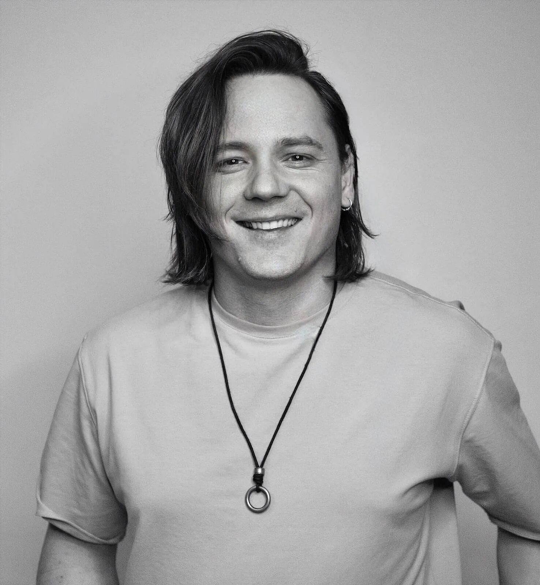

15 лет
в музыкальной индустрии

Обо мнеПродюсер · Звукорежиссёр · Музыкант
Я люблю свою работу и вовлекаюсь в проект артиста и в сам процесс. Для меня важен результат: финальное звучание, в котором артист слышит свою музыкальную концепцию.
Я Макс Малвин. Занимаюсь музыкальным продюсированием, аранжировкой и звукорежиссурой.
Я работаю с музыкой с разных сторон: выступал как музыкант и артист, работал на сцене и занимался звукорежиссурой. Этот опыт помогает мне смотреть на создание песни не только с технической, но и с музыкальной стороны.
Сегодня моё основное направление — работа с артистами. Я помогаю развивать идеи, формировать индивидуальное звучание, работать над аранжировкой и доводить песни до результата.
в музыкальной индустрии
высшее музыкальное образование
курсы повышения квалификации
опыт работы в записи и на концертах
Для меня важно не просто выполнить техническую задачу, а понять замысел артиста и найти решение, которое будет работать на саму музыку.
Каждый проект начинается с понимания музыки и задачи артиста. Я стараюсь выстроить работу так, чтобы творческий процесс оставался понятным, а все этапы — последовательными и согласованными.
Например, если артист приносит песню под гитару, я сначала слушаю её без аранжировки и спрашиваю, о чём она. Затем предлагаю несколько направлений звучания, и мы выбираем то, которое ближе к смыслу песни, а не к моде.
Расскажите, что за песня, кто исполнитель и на каком этапе работа. Я отвечу и предложу формат сотрудничества.